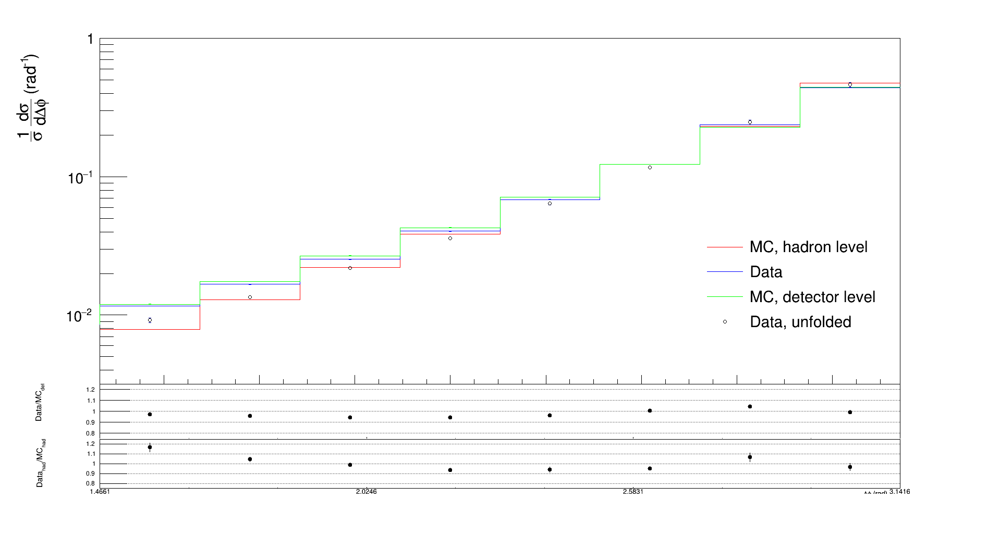

Measurement of the azimuthal decorrelation angle
between the leading jet and scattered lepton
in deep inelastic scattering at HERA

Uncertainties
For migration, covariance and correlation matrices for differet regions see:
integral
10 < Q
2
< 50 GeV
50 < Q
2
< 100 GeV
100 < Q
2
< 350 GeV